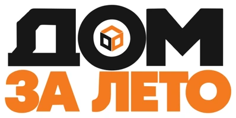
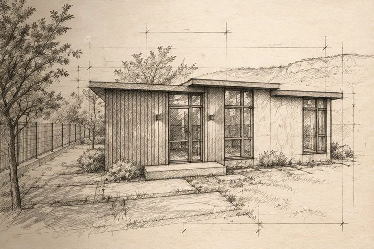
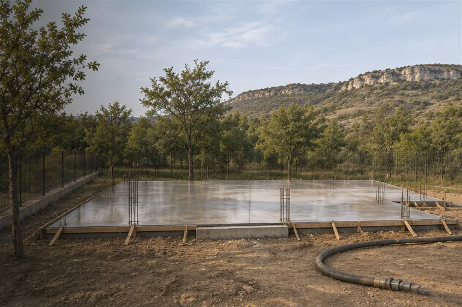

Дом 89
80,1 м² внутри. Три спальни и кухня-гостиная 29,2 м².

Дом за летоДома из заводских панелей
Строим дома для жизни. Проектируем доходные дома и гостевые комплексы под ваш участок.





Сначала — замысел
Увязываем планировку, посадку дома и вид из окон.
Три спальни и 80,1 м² внутри. Этапы строительства показаны на иллюстрациях.
Каталог
Сравниваете с СИП или каркасом? Сопоставьте одинаковую комплектацию, характеристики стены и состав работ по смете.
Как сравнить технологииВведите длину, ширину и этажность. Получите ориентир по площади и передайте его для расчёта сметы.